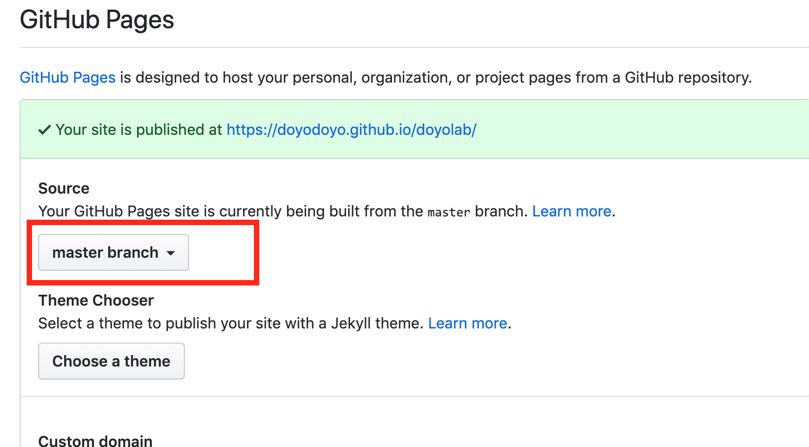
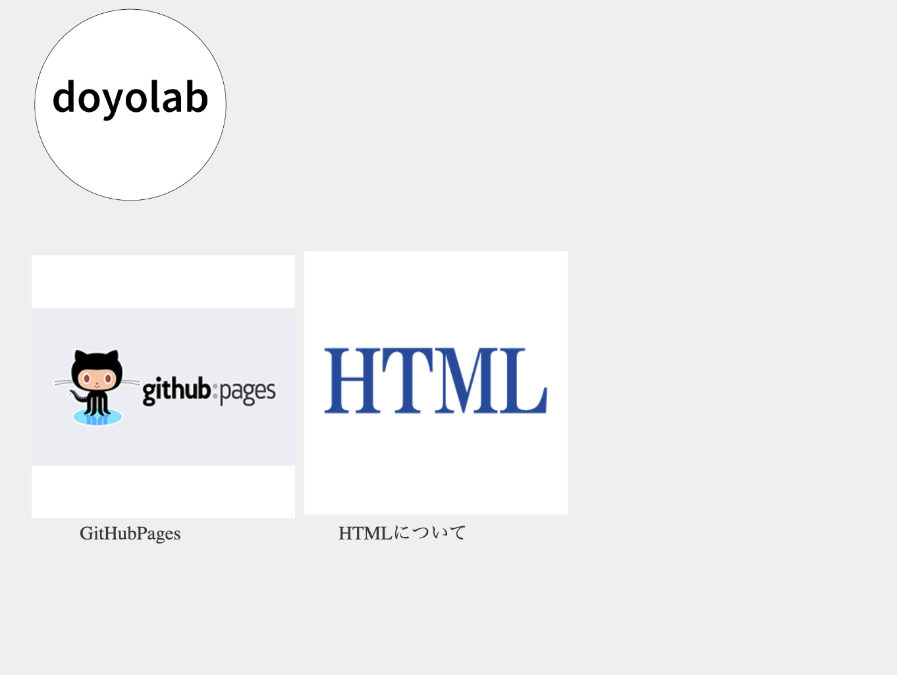

ここを参照にインストールする。
Git Bushを立ち上げ、以下のコマンドを入力してEnterをすることでGit用フォルダを作成できる。
mkdir mygit
Gitの初期設定のため以下のコマンドを入力しEnterする。
git init
次に以下のコマンドを入力しEnterする。
git config --global user.email "自分のメールアドレス"
次に以下のコマンドを入力しEnterする。
git config --global user.name "自分の名前(アルファベット)"
GithubのホームページでGithubのアカウントを作成する。
アカウント名、メールアドレス、パスワードは忘れないようメモ帳などにコピペしておく。
githubの右上にある+マークをクリックした後、New Repositoryをクリックし、新しいリポジトリーを作る。

下記の画像を参考にdoyolabというリポジトリーを作成する。

リポジトリーのSettingsから下記の設定をする。

ここを参考にアクセストークンを作る。
個人アクセストークンは作成時しかみることができないため、必ずコピーして保存しておく。
githubのdoyolabというリポジトリーの中で下記のボタンを押し、リポジトリーのURLをコピーする。

ターミナルを開いて、下記のコマンドでmygitフォルダに移動する。cdはchange directoryの略。
cd mygit
ターミナルで下記のコマンドを入力し、クローンを作成する。(URLは上でコピーしたURL。)
git clone リポジトリのURL
mygitの中にdoyolabというフォルダができて、doyolabフォルダの中にREADME.mdファイルが入っていれば成功。
htmlファイルを作って、doyolabフォルダに入れ、下記の手順でgithubへアップロードできる。
cd mygit/doyolab
(doyolabフォルダに移動するだけなので、既に移動済みの場合はやらなくてOK)
git add .
git commit -m"メッセージ"
git push
自分のページに下のようなページが表示されたら成功。（すぐに更新されない場合は１分ほど待つか、ブラウザの履歴を削除してから試す。）
